Defining the Mandate (Part 1)
Why the retail options mandate is defined by what you refuse to do — and why options became the US retail trader's only real leverage.
The first POTM lesson never touches an option strategy. It draws a hard boundary instead: POTM assumes you already have a fundamental view and only decides which instrument expresses it. Get the mandate wrong and every strategy you learn afterwards is pointed at the wrong target.
The gist
- POTM does NOT teach fundamental views — stocks are the PTM's job, forex the PFTM's; POTM assumes a fundamental predisposition already exists and only decides WHICH instrument expresses it.
- CFDs were banned in the US in 2010 (post-crisis, because the vast majority of US retail traders blew up on leverage), so options became US retail's primary leveraged investment vehicle.
- International CFDs run on ~10% margin = up to ~10x leverage; US traders must post far more margin, so they gravitate to options — but CFDs may be banned or margined higher internationally in the next 5-10 years.
- The mandate is defined by exclusion: concentrate on the US-listed stock options market (most liquid, most information, most relevant) — NOT currency, commodity or rates options.
- The two-point mandate: (1) educate retail globally on options in retail brokerage + US retirement accounts (IRA & IRA Roth); (2) use the US-listed stock options market as an example subset, assuming a fundamental systematic process is already in place.
- Professional Trader Replication: ~80% of hedge funds and IB prop desks run a systematic fundamental idea-generation process — 80% of the effort is ideas, 20% is gatekeeping/risk/self-awareness. Retail does it upside down (80% charts/risk, 20% ideas).
- The four-step systematic process is Idea Generation -> Gatekeeping -> Risk Management -> Self-Awareness; stocks use top-down AND bottom-up, while commodities, currencies and bonds are top-down only.
- Replicate the PROP TRADER, not the options market maker: the target horizon is 1-3 months (not day-trading the spread); self-awareness needs 50+ trades over 6-12 months; ~95% of educators (only ~1 in 20) have real professional experience, and only former regulated pros can legally teach.
Define what you are NOT going to do
- The mandate begins by excluding: name what POTM will NOT cover, so the boundary is solid before any strategy is taught.
- Fundamental views on stocks are taught by the PTM; on forex pairs by the PFTM — POTM does not repeat that idea-generation content.
- The PTM and PFTM teach systematic frameworks for views AND how to time, risk-manage and measure performance using cash and non-options derivatives (Futures, CFDs, ETFs).
- If you lack a systematic framework, subscribe to PTM and/or PFTM; if you already have one, POTM adds value at the trade-structuring step.
Anton opens the entire course not with a strategy but with a subtraction. If you never fix what you are excluding, you end up trading strategies that do not fit your mandate as a retail trader — which is exactly how most people lose.
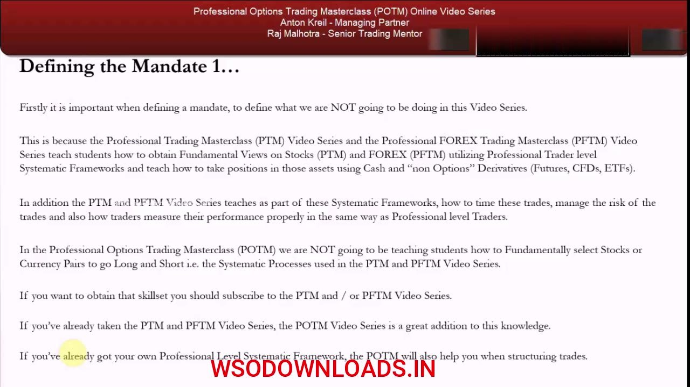
Options are derived, not mirrored
- An option is a derivative whose value depends on and is DERIVED from the price of the underlying asset — complex enough to need its own video series.
- Index futures, currency/commodity futures, ETFs and CFDs simply MIRROR the underlying, so they express a view simply and cleanly.
- Because they only mirror, those instruments are far easier to understand than options.
- Options are far more complex; volatility becomes a major, major factor when choosing an option over a mirroring instrument.
This is the conceptual core of why options deserve a dedicated course: mirror instruments track the underlying one-for-one, but an option's value is a function of the underlying plus time and volatility — a different, harder object.
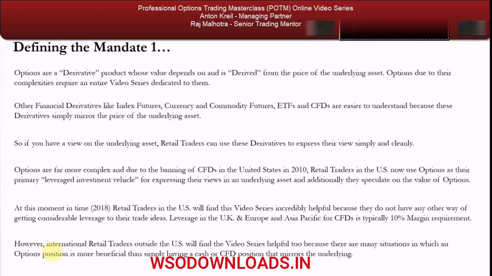
Why options: CFDs banned in the US (2010)
- CFDs were banned in the United States in 2010, so US retail traders now use options as their primary leveraged investment vehicle for expressing views in an underlying.
- International CFDs on most large, mega and many mid caps carry ~10% margin — up to ~10x leverage on the account deposit.
- US traders taking the same notional position must post far more margin, so they gravitate to options for leverage on overnight positions.
- As of the lesson (2018), US retail have no other real way to get considerable leverage to trade ideas.
The whole popularity of US retail options is a regulatory artifact: ban the cheap-leverage CFD and traders route the same demand for leverage through the options market instead.
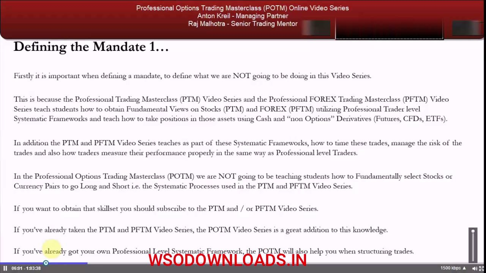
The ban was a blow-up, and it may go global
- The 2010 ban was post-Global-Financial-Crisis: the vast majority of US retail over-leveraged on CFDs, couldn't post escalating margin, and blew up.
- CFDs may be banned internationally too, or margin requirements may increase significantly — likely within the next 5-10 years across UK, Europe, Asia Pacific.
- So retail traders both in the US and internationally have no choice but to obtain the options skill set.
- But learn it properly from professional traders — not brokers, market makers or charlatan educators who are brokers in disguise and carry a conflict of interest.
The conclusion is a hedge against the future: even if you can use cheap CFDs today, the leverage that got banned in the US is a target for regulators everywhere, so options are a durable skill worth acquiring now.
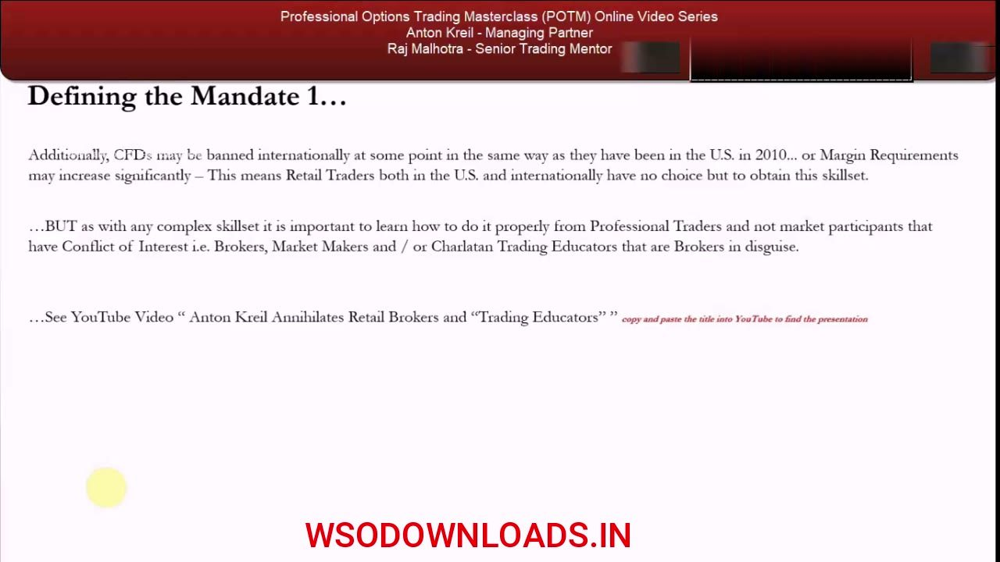
The fundamental predisposition assumption
- POTM will NOT teach the systematic process of fundamentally selecting stocks or currency pairs to go long/short.
- It assumes you are already at 'fundamental predisposition' — you have a systematic framework producing longs and shorts.
- The only open question POTM answers: which INSTRUMENT best expresses a view you already hold.
- Being right fundamentally matters far more than being a good risk manager or timer — timing and risk are mechanical and learnable; the idea-generation process is not.
This is the pivot the whole course rests on. POTM starts where a professional idea process leaves off: you are bullish or bearish already, and the job is to structure that view optimally — most retail traders instead trade options for the sake of it, which is why they lose.
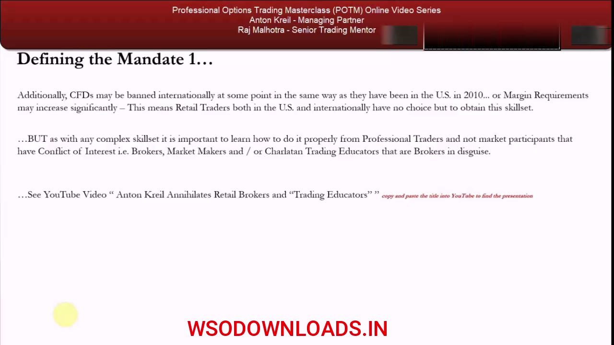
The four-step systematic process
- The four steps: Idea Generation -> Gatekeeping -> Risk Management -> Self-Awareness statistics.
- Idea Generation is by far the most important: World View -> Industry/Sector Views -> Stock Views, top-down, combined with bottom-up analysis in the stock market.
- In commodities, currencies and bonds there is NO bottom-up — only top-down (your macro world view).
- Gatekeeping (Technical Analysis + Price Action) times the trades so you don't mistime a good fundamental idea; the split is 80% idea generation / 20% gatekeeping.
The framework chart (its boxes spell WISH — World view, Industry views, Stock views, Having discipline) is the map POTM assumes you have already built. Note the asymmetry: stocks get both top-down and bottom-up; everything else is top-down only.
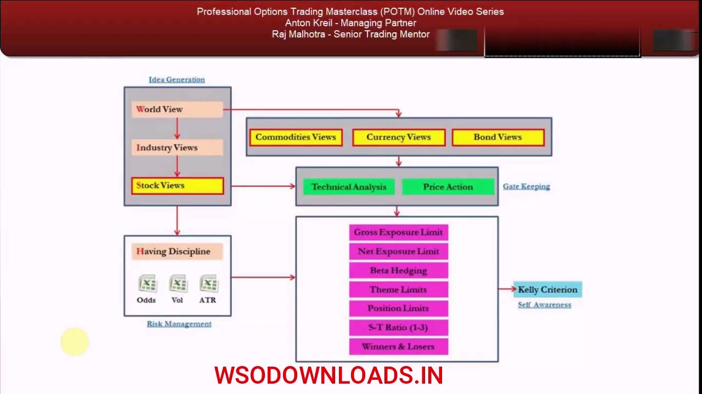
Risk management and self-awareness
- Once a position is on: risk management calculates the odds of being right/wrong plus volatility and average true ranges, so you know what you can make and lose.
- The explicit limits: Gross Exposure Limit, Net Exposure Limit, Beta Hedging, Theme Limits, Position Limits, a 1:3 stop-to-target risk-reward, and how you treat Winners & Losers.
- The most important self-awareness metric is the Kelly Criterion — measuring what you're genuinely good and bad at (idea generation vs risk management).
- Building a portfolio is about reducing overall risk; self-awareness takes 50+ trades over roughly 6-12 months to become meaningful.
Risk management and discipline are where the framework overlaps into POTM — because volatility is a major factor in whether an option beats a plain instrument, the risk/discipline layer does carry into options trading even though idea generation does not.
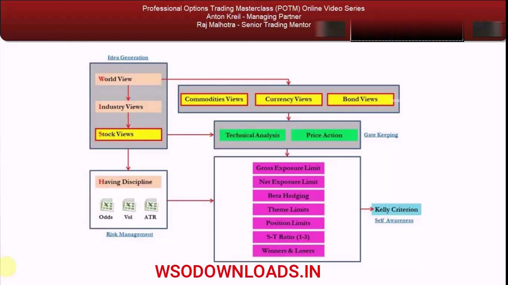
The mandate, defined
- Concentrate on stocks and stock options — NOT currency, commodity or rates options.
- Use the US-listed stock options market: the most heavily traded, most liquid for retail, most relevant to the student base, with the most information.
- Point 1: provide an in-depth educational program for retail traders globally on trading options in retail brokerage accounts AND US retirement accounts (IRA & IRA Roth).
- Point 2: use the US-listed stock options market as an example subset of data/information to pass on how professional traders best utilize options for consistent career/lifetime profits — assuming a fundamental systematic process is already in place.
The mandate crystallises here into two written points. It is deliberately narrow: one instrument (stock options), one market (US-listed), one prerequisite (a fundamental process you already own).
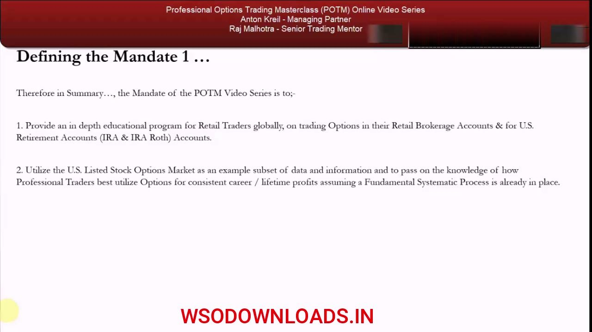
Professional Trader Replication
- ~80% of hedge funds and investment-bank proprietary desks use a systematic fundamental process for generating ideas, overlaid with bespoke risk management and 'self-awareness' metrics.
- POTM takes the same replication approach: aim to trade like the vast majority of professional traders to sustain a professional risk/return profile.
- A professional trader is regulated to trade/invest Other People's Money (OPM) — hedge fund managers invest institutional/UHNW/HNW capital via offshore private vehicles; IB prop traders trade the bank's proprietary capital on behalf of public shareholders.
- Retail's error is doing it upside down: 80% of time on charts/risk-management, 20% on ideas — the exact inversion of the professional split.
Replication is the governing idea: copy what the majority of professionals do, not what educators or brokers teach. And the majority put the bulk of their effort into fundamental ideas, precisely the part retail neglects.
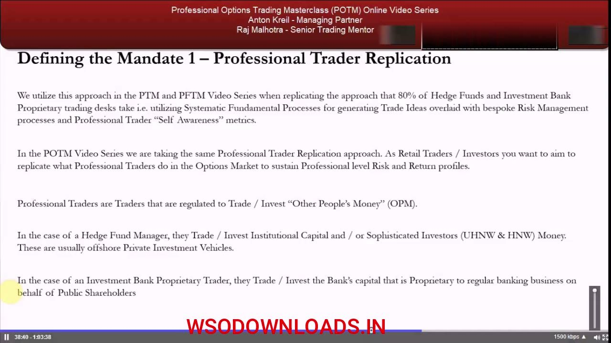
Only former regulated pros can teach
- No current regulated professional trader can teach retail publicly — their compliance departments won't allow it (conflict of interest).
- Former professional traders CAN teach; the distinction between a real former pro and a pretender is critical, because only a real one can teach professional strategies.
- Someone who has never spent even an hour on the desk cannot teach it properly and generally carries a conflict of interest.
- The Institute hires only mentors with a genuine regulated background and takes a flat fee — no ongoing broker commissions or subscriptions, so no conflict.
The credibility argument: professional strategies can only be transmitted by people who actually ran them, and current pros are legally barred from teaching, so a genuine former-pro background is the filter that matters.
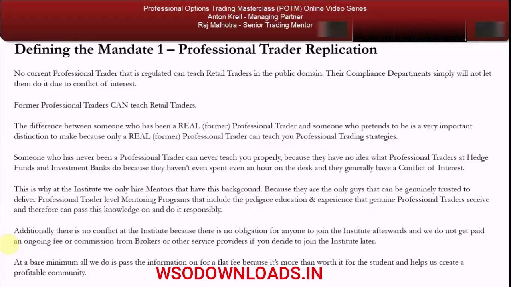
Verify the pedigree; ~1 in 20 are real
- Full regulatory histories are at itpm.com/mentoring, and can be cross-checked on regulator sites (FCA in the UK, FINRA in the US).
- The tutors: Anton Kreil (ITPM managing partner; ex-prop trader/market maker at Goldman Sachs, Lehman Brothers, JP Morgan), Raj Malhotra (ex-head of options trading at Bank of America and Nomura), Christopher Quill (ex-Ruffer Asset Management options trader/quant).
- About 95% of trading educators have zero professional trading experience — only ~1 in 20 have any; former pros as educators are a small minority.
- You no longer have to trust charlatans who copy the narrative of real professional traders — you can verify the source and go direct.
The pedigree is verifiable on public regulator databases, which is the whole point: replication only works if the person you learn from actually did the thing, and that claim can be checked rather than believed.
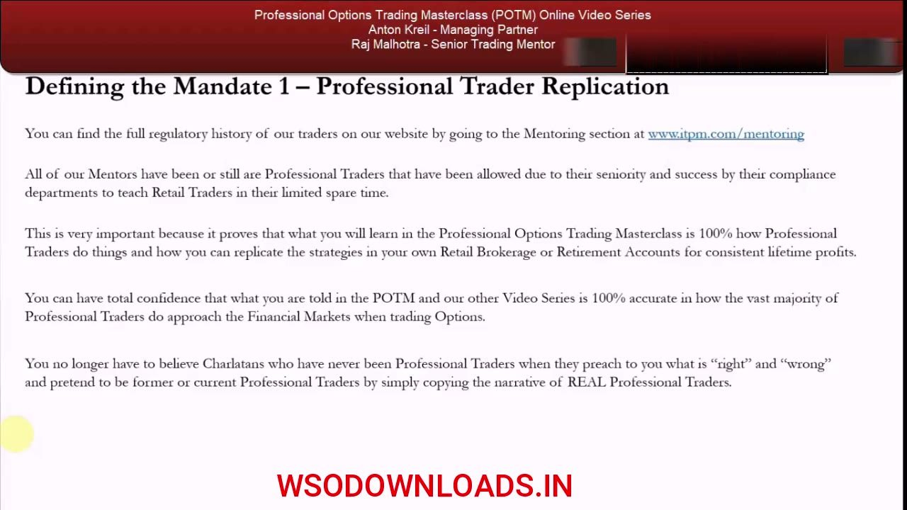
Prop trader, not options market maker
- An options market maker makes a two-way (bid/ask) market and profits from the spread plus commission; large banks (Goldman, JP Morgan, Morgan Stanley, Bank of America) supply most quotes and volume.
- A market maker and a prop trader are two totally separate business entities with different mandates — retail replicates the PROP TRADER, not the market maker.
- Learning from a former market maker means ~90% of what they teach is irrelevant to the retail mandate (nickel-and-diming the spread, arbitrage) — you get no edge from it.
- The retail horizon is 1-3 months (NOT day-trading): accumulate 1-3 month fundamentally-driven ideas and use stock options to structure trades you already want to hold.
The final distinction closes the mandate: market makers profit from the spread over one day; prop traders express fundamental views over 1-3 months. Copy the wrong one and every option strategy you learn is optimised for a business you're not in.
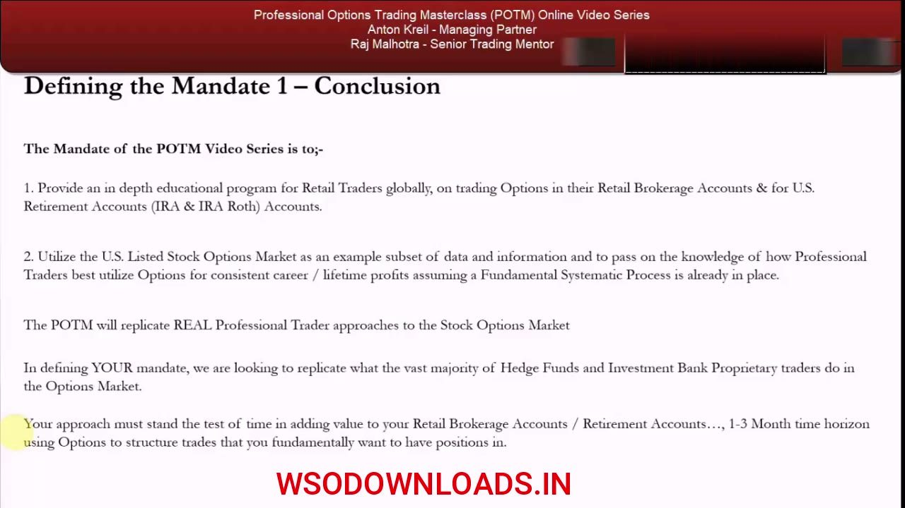
Glossary
- MandateThe precise definition of what a retail options trader is (and is NOT) trying to do — fixed by exclusion before any strategy is learned.
- CFD (Contract for Difference)A derivative that mirrors an underlying at low (~10%) margin, giving up to ~10x leverage. Banned in the US in 2010; may be banned or margined higher internationally in 5-10 years.
- POTM / PTM / PFTMThe Professional Options / Trading / FOREX Trading Masterclass. PTM teaches fundamental stock views, PFTM forex views; POTM assumes those exist and teaches only which instrument expresses them.
- Fundamental predispositionThe state of already holding a systematic fundamental long/short view; POTM's starting point — the only open question is which instrument to use.
- Derivative (option)An instrument whose value is DERIVED from an underlying (via price, time and volatility), unlike futures/CFDs/ETFs which simply mirror the underlying.
- Systematic processThe four-step professional workflow: Idea Generation -> Gatekeeping -> Risk Management -> Self-Awareness; stocks use top-down + bottom-up, commodities/currencies/bonds top-down only.
- Professional Trader ReplicationCopying what ~80% of hedge funds and IB prop desks do (80% ideas, 20% gatekeeping/risk/self-awareness) — the inverse of how retail typically operates.
- Kelly CriterionThe key self-awareness metric for sizing and for judging whether you are a good idea generator or risk manager; meaningful only after 50+ trades over ~6-12 months.
- Options market makerA firm that quotes a two-way bid/ask market and profits from the spread plus commission — a separate business from the prop trader retail should replicate.
- OPM (Other People's Money)Capital a regulated professional trades on behalf of others — institutional/UHNW/HNW money (hedge funds) or the bank's proprietary capital (prop traders).